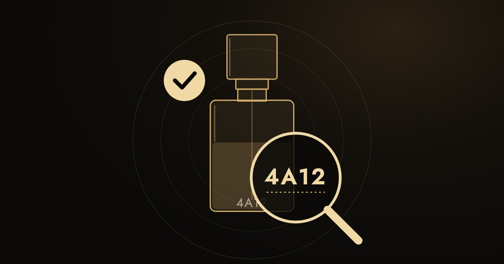

Authenticity · Guide
How to tell genuine perfume from a fake
Quick answer
To check whether a perfume is genuine, look at six things: the cellophane, the box, the bottle, the cap, the sprayer and the liquid. The batch code on the box should match the one on the bottle. No single check proves it, so judge them together, and if you are still unsure, have it checked in person at a reputed perfume store.
Counterfeit perfume is cheap to make and easy to photograph, which is why it turns up on marketplaces, Instagram pages and even small shops. The good news: fakes usually slip on the small details. No single check proves a bottle is genuine, so treat the six spots below as a set. The more of them line up, the more confident you can be.

Before you check anything: price and seller
Two things can be judged before the parcel arrives.
Price. Authorised shops sell at prices the brands set or recommend, so a new, sealed bottle of a famous designer perfume at a small fraction of every shop's price should make you ask why. Price alone doesn't settle it, though. Testers, bottles with no box, older batches and many Middle-Eastern houses are honestly cheaper. A trustworthy seller tells you which one you are buying, in the listing and not after you have paid.
Seller. Look for a clear description of what you are getting (Retail, Tester, No Box), real photos, a way to reach an actual person, and a written promise of what happens if the bottle turns out not to be genuine. Be wary of words like first copy, master copy, AAA or 1:1. Those describe imitations, however they are dressed up.
The six spots to check
Once the bottle is in your hands, go through these in order. The numbers match the picture.
- Cellophane. It should be tight and clean, neatly folded at the ends, with a straight, narrow seam. Loose, wrinkled or glue-streaked wrap is a warning sign. It is not proof on its own, because boxes get scuffed in warehouses and can be re-wrapped, so use it as a reason to look harder at the other five.
- The box. Printing should be crisp, evenly coloured and spelt correctly, on sturdy card with clean folds. It lists the name, strength (EDP, EDT and so on), volume in ml, ingredients, country of manufacture and a barcode. Perfume imported into India usually also carries an importer's label with a name, address and MRP. Find the batch code: a short mix of letters and numbers, normally stamped, embossed or printed on the base or a flap, and not part of the box artwork.
- The bottle. Glass should be thick, clear and even, with no bubbles and neat seams, and the lettering sharp and straight. Look for the same batch code on the bottle, often on the base or the back. It should match the code on the box. A different code, or none where that brand normally prints one, is a red flag.
- The cap. It should fit snugly, sit straight and feel solid. Hollow, rattly or badly aligned caps are common on fakes. Some brands use light plastic caps by design, so compare with a photo of the genuine one on the brand's own site.
- The sprayer. Look for a neat metal collar, a fine even mist, and no dribbling or squirting. The thin tube inside should reach the bottom of the bottle and no further. A long tube curling up at the base is a classic giveaway.
- The liquid. It should be clear and evenly coloured, with no cloudiness or floating specks, filled to about the level other bottles of that fragrance show. The scent should open the way you expect and develop over the next hours. Something sharp and alcoholic that vanishes within the hour points the wrong way.
Use the nose last
The scent is the weakest test. Skin, weather and reformulations change how real perfume smells, and genuine perfume darkens slowly with age and heat. And a matching batch code isn't proof either: copies sometimes reuse real codes, while thousands of genuine bottles share one code, so seeing the same code on two bottles isn't suspicious. Judge the six spots together, not one at a time.
Things that look wrong, but aren't
Some genuine products are sold looking different on purpose. Don't mistake them for fakes.
- A tester comes in a plain white or brown carton (or none), with no cellophane and sometimes no cap. That is how testers are made. Read Perfume testers explained.
- Minis, vials and decants have no brand box, and the batch code belongs to the bottle they were filled from. Read Retail, tester, decant or discovery set to see what each should look like.
- “No Box” or “Box Damage” in a listing is the seller telling you the truth about the packaging, not hiding a fake.
- Older or regional packaging. Brands redesign boxes and bottles from time to time, and different countries get different languages and labels. Compare with photos of the same year and market where you can.
- A slightly different smell from your last bottle. Batches vary a little and brands adjust formulas. A completely different smell is worth questioning; a slight change is normal.
Still unsure? Have it checked in person
If something doesn't feel right, don't guess. Take the bottle to a reputed perfume store and ask the staff to look at it: Sephora, Nykaa, Shoppers Stop or Parcos, or the brand's own boutique. They handle genuine stock every day and can compare yours with what is on their shelves.
That is exactly how our guarantee works. If a reputed store confirms in writing that something you bought from us is not genuine, we refund three times what you paid for that item. The claim rules explain the steps, including filming the unboxing.
Before you order from anyone, ask for pictures of the box and the bottle with the batch code visible. A seller who sends them happily is a good sign; one who dodges the question tells you something too.
Common questions
How can I tell if a perfume is original?
Check six things: the cellophane, the box, the bottle, the cap, the sprayer and the liquid. The batch code on the box should match the one on the bottle. No single check is proof, so judge them together, and ask the seller for photos of the box and bottle with the batch code visible before you order.
Does a matching batch code prove a perfume is genuine?
No. A matching code is necessary but not sufficient: copies sometimes reuse real codes, and thousands of genuine bottles share one batch code. Treat it as one check among six, and look at the glass, the cap, the sprayer and the liquid as well.
Can a fake perfume smell like the real one?
Some imitations smell close at first. They are often sharper, thinner and gone within the hour, but scent is the weakest test, because skin, weather and reformulations change how genuine perfume smells too. Check the packaging, the batch code and the sprayer first, and use the nose last.
Is a perfume without a box fake?
Not necessarily. Testers, minis, vials and bottles sold as “No Box” are genuine products sold without retail packaging. A good seller says so in the listing. Check the batch code on the bottle itself, and be wary of a seller who will not tell you which format you are buying.
What should I do if I think I have a fake?
Take it to a reputed perfume store (Sephora, Nykaa, Shoppers Stop or Parcos) and ask the staff to look at it. If you bought it from us and the store confirms in writing that it is not genuine, send us the report on WhatsApp within 7 days of delivery and we refund three times what you paid for that item. Film the unboxing first: our claim rules need it.